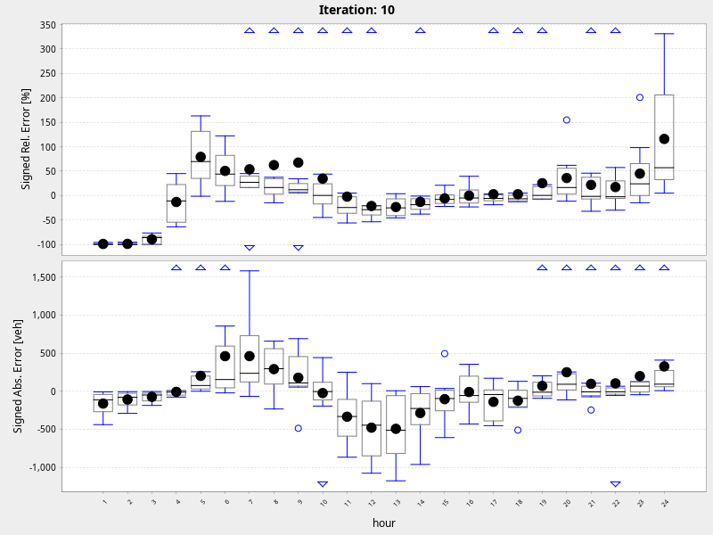

Multi-Agent Transport Simulation Toolkit
Counting Volumes
sim and real volumes:
hour: 1
hour: 2
hour: 3
hour: 4
hour: 5
hour: 6
hour: 7
hour: 8
hour: 9
hour: 10
hour: 11
hour: 12
hour: 13
hour: 14
hour: 15
hour: 16
hour: 17
hour: 18
hour: 19
hour: 20
hour: 21
hour: 22
hour: 23
hour: 24
errors:
errors
biasErrors
link volumes:
link31984
link31990
link40760
link42243
link44151
link44152
link74729
link81215
average working day sim and count volumes:
simVsRealVolumes24Iteration10
